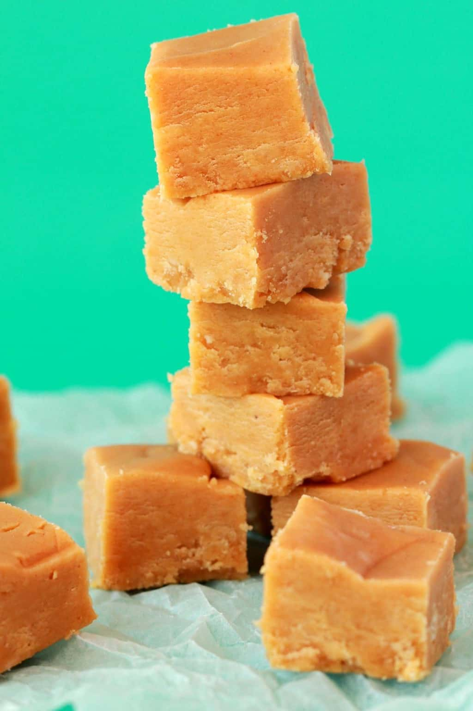

Vegan Peanut Butter Fudge

Ingredients
- 1 cup vegan butter
- 1 cup peanut butter
- 1 tsp vanilla extract
- 4 cups powdered sugar
Description
Fudge. Easy as pie, but fudgier
Steps
- Place vegan butter and peanut butter into a microwave safe dish with a lid. Microwave for 2 minutes
- Bring it out to stir very well so that they are well combined. Then return to the microwave for another 2 minutes. If it starts to boil it is done.
- Add the vanilla and powdered sugar and mix in.
- Transfer to an 8x8" square parchment lined dish and smooth with a spoon
- Place into the fridge to set. Once it has set, lift the whole block of fudge out with the parchment paper and cut into small squares.